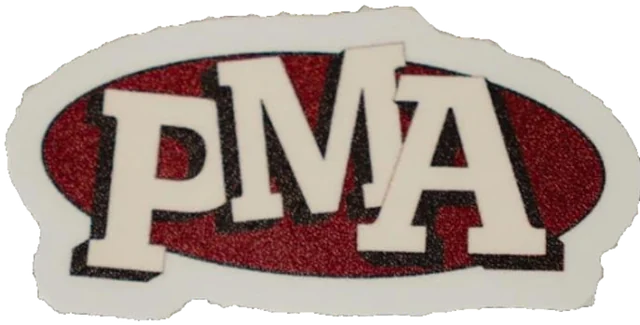
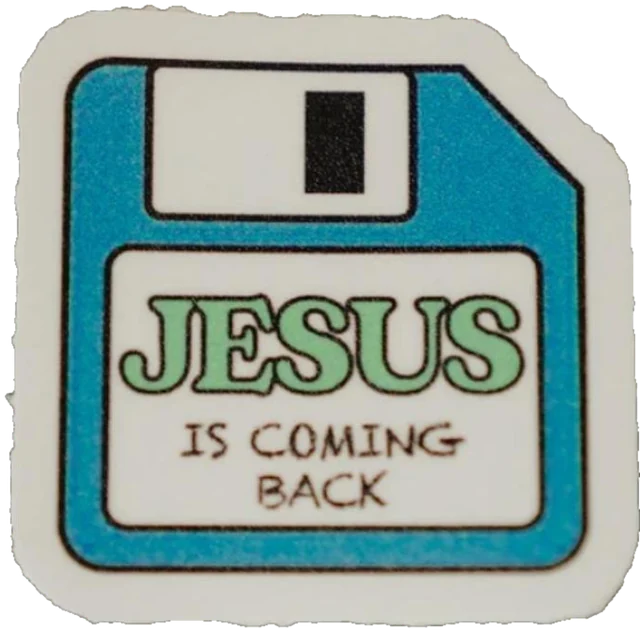
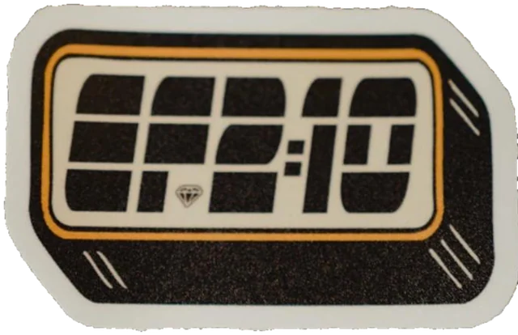
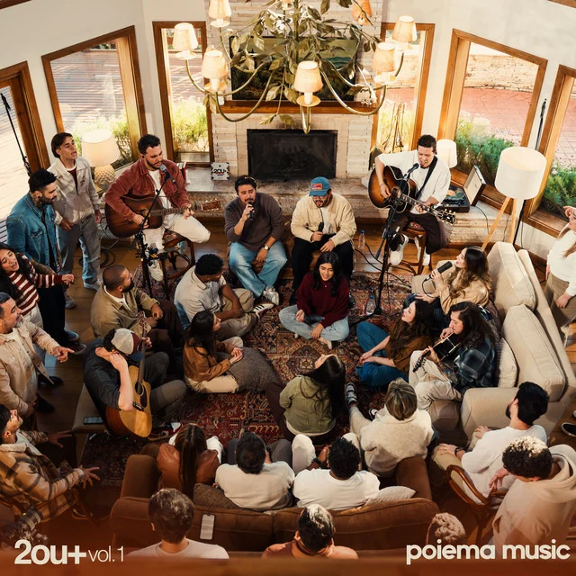

Base bíblica
Tudo começa na Palavra. O próprio nome da igreja vem da Bíblia: somos obra de Deus, criados para as boas obras.



Igreja Poiema
De criaturas a servos, amigos e filhos.
Poiema é a palavra grega de Efésios 2:10: obra, feitura. Somos uma igreja cristã que acredita que Deus está fazendo algo novo em cada pessoa, e isso se vive de perto: na Palavra, à mesa e nas casas.
Tudo começa na Palavra. O próprio nome da igreja vem da Bíblia: somos obra de Deus, criados para as boas obras.
A fé se vive em volta da mesa: comer junto, ouvir, orar e sempre chamar mais alguém para sentar com a gente.
Vida na vida. Em grupos pequenos nas casas, ninguém caminha sozinho e todo mundo tem com quem crescer.
Assistir “O que é discipulado?”Efésios 2:10
porque somos feitura sua, criados em cristo jesus para as boas obras
Por onde começar
Cultos, encontros e inscrições abertas.
Tem uma mesa perto da sua casa.
Para empresários: empreender por um propósito maior.
Cultos, séries e conversas em playlists.

O álbum novo da Poiema Music, com os clipes.
A coleção da Poiema Conf 2026 chegou.